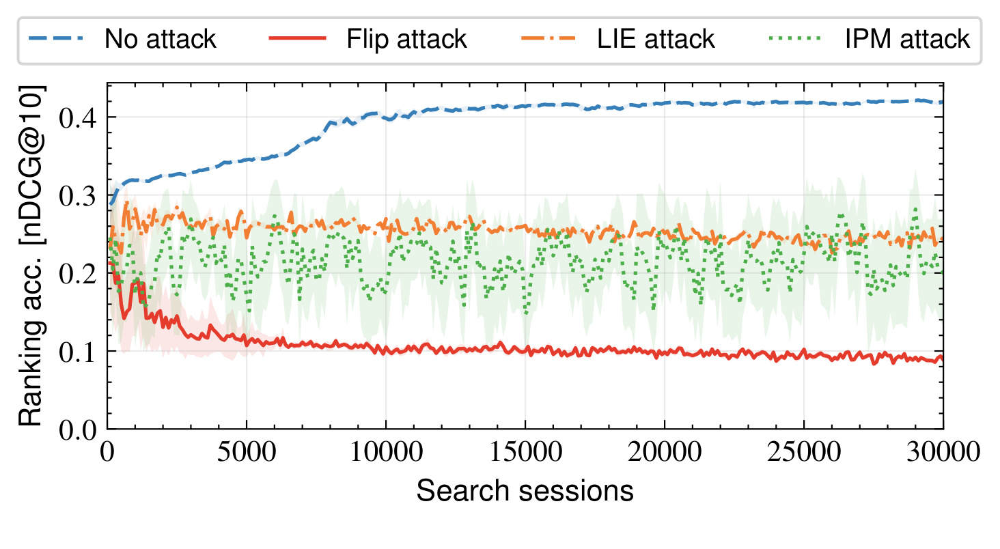
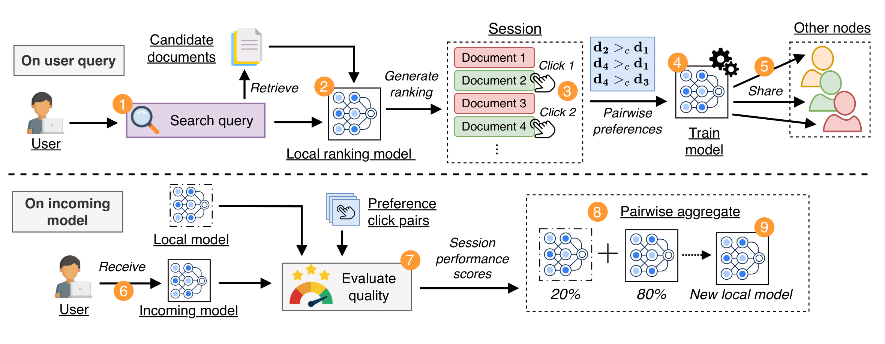
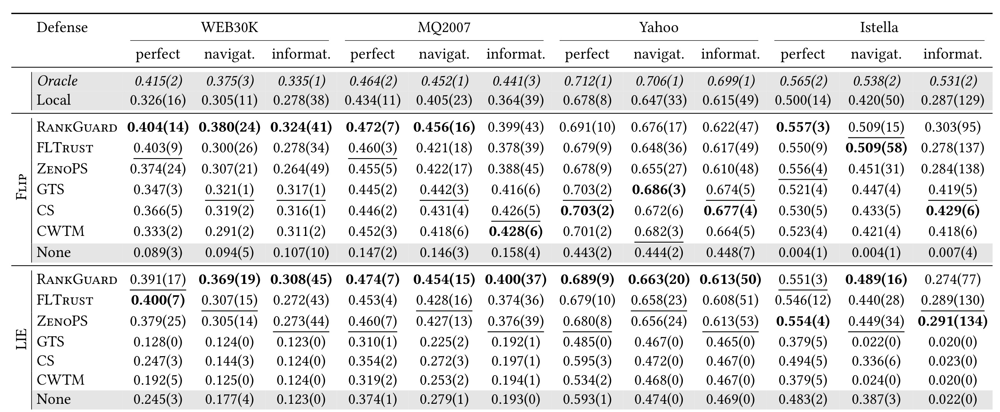
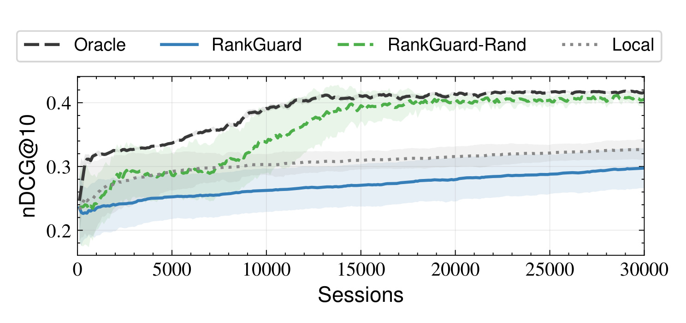
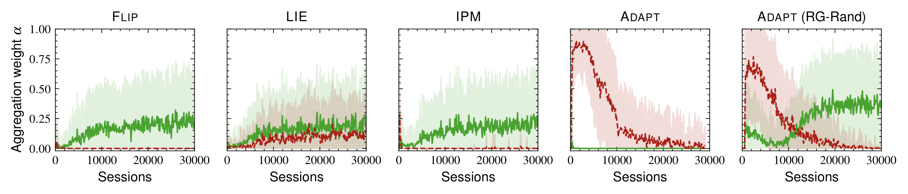
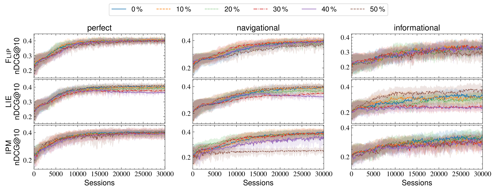
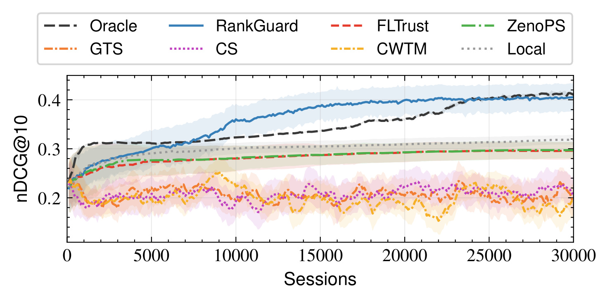
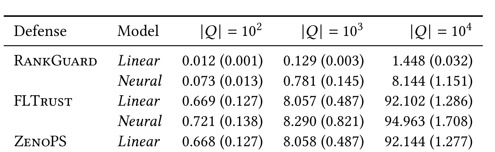
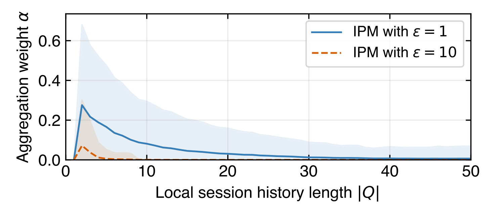

Efficient and Robust Online Learning to Rank in Decentralized Systems 是一篇把在线学习排序、去中心化 gossip learning 和拜占庭鲁棒聚合放到同一个问题里的论文。一作 Marcel Gregoriadis 来自 TU Delft，合作作者来自 EPFL 和 TU Delft；论文入口：arXiv:2606.12246。本文提出的 RankGuard 不是在中心服务器上清洗客户端更新，而是在每个用户本地用自己的点击历史给收到的模型做质量门控：如果外来模型更能解释本地过去的、经过位置偏置校正的点击偏好，就按统计置信度吸收；否则几乎不聚合。代码/项目页状态：本轮仅核验到论文页面和论文文本，没有核验到独立开源仓库。
1. 背景和问题
在线学习排序（Online Learning to Rank, OLTR）的核心吸引力，是排序模型可以直接从真实搜索会话的点击反馈中持续更新。用户输入查询，系统返回一个候选文档列表，用户点击某些结果，排序器再从这些隐式反馈里学习下一轮如何排得更好。这个范式比离线标注更贴近真实需求，但它在主流系统里通常依赖一个可信中心：中心服务收集或汇总交互信号，维护全局或半全局模型，再把排序结果提供给用户。论文开头把这个架构风险说得很直接：搜索排序塑造用户看到的信息，而多数用户只看前几个结果；如果排序权力集中在少数运营方，商业偏置、政治偏置或其他与用户目标冲突的偏置就可能被注入结果页，而且用户很难知道排序决策到底由哪些因素驱动。
去中心化搜索或去中心化内容平台看起来可以绕开这个中心权力点。Filecoin 需要按价格、可靠性、延迟等因素排序存储提供者，DTube 需要在没有中心服务器的情况下推荐视频；这些场景天然不希望重新引入一个中心排序组件。问题在于，去中心化学习不是把中心服务器拿掉就自动安全。RankGuard 讨论的是 gossip learning 式的 decentralized OLTR：每个节点持有自己的点击历史和本地排序模型，用户活跃时本地更新模型，然后把模型权重推送给随机邻居；收到其他节点模型时，本地再决定如何聚合。这个通信方式符合去中心化系统的异步、push-based、节点活跃不规律等现实特征，但也让传统鲁棒聚合的前提失效。没有服务器就没有一个同时看见大量客户端更新的观察者；每个节点只看到少量、变化的邻居模型，也不知道谁是恶意节点。
论文关心的攻击是 untargeted poisoning。恶意节点不一定要把某个指定文档推到顶部，只要能让诚实节点整体排序质量下降，就足以破坏协作学习的可用性。作者在引言里用一个小实验说明风险：100 个节点里有 20 个恶意节点，诚实节点每处理一次会话后把模型发给 7 个随机节点；如果没有专门防御，Flip、LIE、IPM 这三类攻击都会显著拖垮诚实节点的 nDCG@10。Flip 通过反向点击模型制造错误偏好，LIE 在诚实模型的统计范围内注入小扰动，IPM 则让更新方向和诚实梯度相反。三者攻击能力不同，但共同点是它们都可以通过“看似正常的模型更新”进入 gossip 链路。

Figure 1 是这篇论文最重要的动机图。横轴是搜索会话数量，纵轴是诚实节点的 ranking accuracy，也就是 nDCG@10。无攻击曲线随训练逐步上升，而 Flip、LIE、IPM 三条攻击曲线都明显压低最终排序质量；论文正文特别指出，在 30000 个搜索会话后，Flip 下平均准确率可以从无攻击时约 0.42 掉到约 0.09，几乎让排序系统不可用。这个图的重点不是说明某个攻击实现有多强，而是说明“只要模型能在邻居间自由传播”本身就是攻击面：恶意更新不需要控制中心服务器，也不需要拿到全网数据，只要能被诚实节点聚合，就会沿着 gossip 协作扩散。
因此，论文的问题定义比一般 Byzantine-robust learning 更窄也更难落地：一个去中心化、异步、每次只收到一个或少量模型的 OLTR 节点，如何在没有可信服务器、没有干净验证集、也不知道恶意比例的情况下，判断外来模型是不是值得吸收？传统的 Krum、coordinate-wise trimmed mean、geometric median、clipping 等思路依赖“同时拿到一批更新并识别统计离群值”。但在 RankGuard 的场景里，节点并没有这样的批量视角；而且 OLTR 的用户点击本身有位置偏置，不能把本地点击历史直接当作干净标签集。论文的关键转向是：不再问外来模型是否像其他模型，而是问外来模型是否更能解释“我自己过去的点击行为”，并且要用 PDGD 里的位置偏置修正来做这个解释。这个转向把可信锚点从网络身份移到用户交互证据上，也让防御可以在每个节点独立执行。
这个问题与推荐/搜索排序业务有关的地方在于，它把鲁棒性从平台级的全局聚合规则下沉到用户端的局部验收规则。对于中心化搜索，平台可以在服务器侧维护反作弊、模型审计和流量监控；对于去中心化搜索，用户节点必须自己判断邻居给来的模型是否有帮助。RankGuard 试图证明两件事：第一，这个局部验收规则足以抵抗多类 poisoning；第二，它的计算成本足够低，能在每次收到模型时运行，而不是像 Data Shapley 或重训练式验证那样只适合离线批处理。
2. 方法
2.1 PDGD 与位置偏置校正：RankGuard 的本地学习底座
RankGuard 不是从零设计一个排序学习器，而是建立在 PDGD（Pairwise Differentiable Gradient Descent）上。PDGD 处理的是 OLTR 中最麻烦的一点：点击不是干净标签。用户通常从上往下看结果，同一个文档排在第 1 位和第 10 位时被点击概率不同；如果直接把“被点击”当作相关，“未点击”当作不相关，模型会把展示位置造成的曝光差异误学成文档相关性。PDGD 的做法是先从点击会话里构造 pairwise preference：被点击且被检查过的文档相对于未点击但同样被检查的文档更优；然后用交换排序的概率来估计这对偏好受位置偏置影响的程度。
PDGD 首先用 Plackett-Luce 分布从模型分数中采样一个长度为 k 的排序。给定候选集合 D，排序 R 的概率可以写成：
符号解释：D 是当前查询的候选文档集合；R 是展示给用户的排序列表；d_i 是 R 中第 i 个位置的文档；P(d_i | ·) 是在剩余候选中抽到 d_i 的概率。这个采样过程有两个作用：它给低分文档保留探索机会，也让算法可以比较真实排序 R 和交换某一对点击/未点击文档后的反事实排序 R^*。
如果用户点击了 d_i，而 d_j 被检查但没点击，PDGD 记作 d_i >_c d_j。为了衡量这对偏好有多少来自位置偏置，论文沿用 PDGD 的权重：
符号解释：R^*(d_i,d_j,R) 是把 R 中 d_i 和 d_j 的位置交换后的排序；rho 越接近 0，说明原排序已经强烈支持 d_i 在 d_j 前面，点击可能更多来自位置优势；rho 越接近 1，说明用户在不利位置下仍偏好 d_i，偏好信号更强。PDGD 随后用 rho 加权 pairwise preference 的梯度：
符号解释：theta 是排序模型参数；f_theta 是评分函数；P 是当前会话得到的点击偏好集合；d_i \succ d_j 表示模型认为 d_i 应排在 d_j 前。RankGuard 的本地训练步骤仍然使用这套 PDGD 更新，因此它继承了 PDGD 对位置偏置的处理，而不是把点击历史当成普通监督标签。
2.2 系统模型：异步 gossip 节点、随机邻居和本地会话历史
论文设定有 n 个节点，每个节点代表一个用户或用户设备。每个节点有本地排序模型 theta_u、本地会话历史 Q_u，以及一个随机 peer sampler（RPS），RPS 会周期性给节点提供均匀采样的邻居集合。节点每次向大约 ceil(log2 n) 个随机邻居分享模型，论文实验里 n=100，所以 fanout 是 7。这个 fanout 不是随意选的，而是去中心化学习里常见的收敛较好设置；持续刷新邻居也能缩小恶意节点长期绑定受害者的攻击面。
威胁模型假设网络里有固定比例 beta 的恶意节点。诚实节点不知道哪些节点恶意，也不知道 beta；一些需要 beta 的 baseline 在实验中被作者“喂”了真实 beta，因此 baseline 其实拿到了 RankGuard 不需要的额外信息。恶意节点偏离协议的方式是发送 poisoned model updates，而不是篡改消息传输或破坏 peer sampler。Sybil、eclipse、隐私推断等网络层或隐私攻击被论文明确排除在本工作之外，作者认为这些需要由鲁棒 peer sampler 或隐私机制单独处理。

Figure 2 把 RankGuard 拆成两个事件。左侧是用户查询：用户发出 search query，系统取回候选文档，用本地模型生成排序，用户点击结果，节点把点击转成 pairwise preferences 并训练本地模型，然后把模型分享给其他节点。右侧是收到模型：节点拿到 incoming model 后，不直接平均，而是用本地历史里的 preference click pairs 计算 session performance scores，再根据外来模型相对本地模型的表现决定 pairwise aggregate 的比例。图中 20%/80% 只是示意，真实 alpha 来自统计检验。这个流程说明 RankGuard 的防御点位于“Receive”之后、“New local model”之前，它不改变用户端 PDGD 学习，也不要求中心端收集更新。
2.3 用户查询事件：本地 PDGD 更新和模型分享
当节点 u 处理查询 q 时，它先取回候选文档 D_u^(q)，用当前模型 theta_u 生成排序 R^(q)，用户浏览并点击。会话结束后，节点从排序和点击中生成偏好集合 P_u^(q)，并为每个偏好对估计位置偏置权重 rho_ij^(q)。然后节点按 PDGD 累积梯度并更新本地模型。论文的 Algorithm 1 中，这一步对应 OnQuery：RetrieveDocuments、RankDocuments、GeneratePairwiseClickPreferences、EstimateBias、累积梯度，再做 theta_u^+ = theta_u + 学习率乘以 grad f_theta_u。
这里有一个容易忽略的点：RankGuard 并不要求节点把点击数据发给别人。节点只把更新后的模型权重发给随机邻居，Q_u 始终留在本地。这和一些 decentralized LTR 工作直接 gossip raw click data 不同。后者可能让节点共享更丰富的行为信号，但通信更重，也更容易泄露隐私；RankGuard 选择 model gossip，并用本地历史做验收，是为了同时保留去中心化、在线学习和较低通信成本。
本地训练事件还决定了 RankGuard 验收外来模型时的“参考集”从哪里来。Q_u 不是额外采集的验证集，而是节点自然积累的搜索会话。每个 q in Q_u 记录候选文档 D_u^(q)、点击偏好 P_u^(q)，以及每对偏好的 rho_ij^(q)。这些信息足以让节点在以后重放本地历史，对比 theta_u 和 theta_v 哪个模型更能解释过去点击。也就是说，RankGuard 没有把验证集作为外部依赖，而是把 OLTR 本来就产生的历史会话重用为 private reference。
2.4 接收模型事件：从点击历史计算会话性能分数
收到邻居 v 的模型 theta_v 后，节点 u 的第一步不是看 theta_v 在参数空间里离自己多远，也不是看 theta_v 是否是邻居模型分布的 outlier，而是把 theta_v 和当前本地模型 theta_u 都放到自己的历史会话 Q_u 上评分。论文先讨论无偏点击时的会话概率：如果点击偏好都是干净的，那么一个模型在会话 q 上表现好，意味着它给“被点击文档排在未点击但被检查文档之前”这个事件更高概率。可以写成：
符号解释：Q_u 是节点 u 的历史会话；P_u^(q) 是会话 q 里从点击得到的偏好集合；D_u^(q) 是该会话候选文档；theta_u 是被评估的模型。这个量本质上是“模型解释当前用户偏好对的对数概率总和”。但因为点击有位置偏置，RankGuard 不能直接使用这个无偏版本，而是把 PDGD 的 rho 权重乘进去：
符号解释：S(q,theta_u) 是模型 theta_u 对会话 q 的位置偏置校正后 session performance score；rho_ij^(q) 是偏好对 d_i >_c d_j 的偏置修正权重。rho 接近 1 时，这个偏好对更像真实相关性信号；rho 接近 0 时，说明点击更可能受展示位置推动，所以该对模型评分贡献更小。
这个评分设计是 RankGuard 的核心。它让“模型是否可信”转化成“模型是否更能解释本用户自己的历史点击”。攻击者如果只是在全局参数分布里伪装成普通更新，但实际会降低该用户偏好解释能力，就会在 S(q,theta_v) - S(q,theta_u) 上吃亏。相反，一个来自诚实节点的模型即使和本地模型参数差异较大，只要它确实能更好解释本地点击，就可能被吸收。这个准则比统计离群检测更适合用户偏好多样、模型更新异质性强的去中心化排序。
2.5 从平均提升到 t 统计量，再到连续聚合权重
如果只看平均提升，RankGuard 可以定义：
符号解释：Delta S 是外来模型 theta_v 相对本地模型 theta_u 在本地历史上的平均分数提升；|Q_u| 是历史会话数量。Delta S 为正说明 theta_v 更能解释用户点击，为负说明它更差。可是论文没有把 Delta S 做成硬阈值，因为短历史下噪声很大，一个略负的外来模型不一定恶意，一个略正的模型也不一定可靠。
RankGuard 因此进一步构造逐会话差值 X_q，并用一元 t 统计量衡量提升的置信度：
符号解释：X_q 是单个历史会话上的外来模型相对本地模型提升；overline X 是这些提升的样本均值；s_X 是样本标准差；sigma 是 sigmoid 函数；kappa 控制敏感度，论文经验上取 4。历史越长、提升越稳定，t 越大，alpha 越接近 1；提升弱或方差大，alpha 接近 0.5 或更低；外来模型明显更差，alpha 接近 0。
最后的模型更新是连续插值：
符号解释：theta_u^+ 是验收后的新本地模型；alpha 是外来模型权重。这个连续权重比二元 accept/reject 更适合在线系统：一个模型可能有部分有益信号但证据不足，完全拒绝会损失协作收益；一个模型可能轻微更好但不稳定，完全替换又会放大噪声。RankGuard 把“是否吸收”和“吸收多少”合在一个统计权重里，避免了硬阈值的脆弱性。尤其在 gossip 场景里，模型到达顺序和邻居集合都在变化，连续 alpha 能让节点在早期保守、证据充分后开放，而不是把所有会话阶段都压成同一条规则。
从防御角度看，攻击者要通过这个门控，需要让 theta_v 在受害者自己的 Q_u 上、按受害者的 rho 权重，稳定解释受害者点击偏好。仅仅把参数做得像诚实模型、或者让更新不成为 outlier，都不够。论文也指出，这让攻击者很难构造“既通过本地历史测试、又真正伤害该用户”的模型；除非攻击者知道受害者 Q_u 并专门优化 RankGuard 的验收函数，这就是后面 Adapt 攻击要模拟的强攻击者。
2.6 随机子历史：针对自适应攻击的非确定性门控
RankGuard 原始设计默认用全部 Q_u 评估外来模型。这个设计在普通攻击下很强，但如果攻击者拥有 oracle 能力，知道受害者当前模型和完整历史，就可以把 RankGuard 自身当成目标函数来优化。论文的 Adapt 攻击就是这个设定：攻击者一方面希望 theta_v - theta_u 朝有害方向，另一方面又希望它在受害者 Q_u 上取得足够高分，让 alpha 不至于太低。作者用 harmful direction 和 passing loss 两个项构造攻击损失，并在实验中证明它确实能让原始 RankGuard 被 Local baseline 超过。
RankGuard 的应对很朴素：不要每次都用完整 Q_u，而是用新鲜采样的随机子集 Q_tilde。这样攻击者即使知道历史，也无法精确知道这次验收会抽到哪些会话，不能精确求解 alpha。论文在 Adapt 实验里发现，用 20% 历史子集表现最好；在 17500 个 session 左右，RankGuard-Rand 的 nDCG@10 超过 0.4，接近 Oracle，而原始 RankGuard 只有约 0.28。这个结果说明，随机化不是为了减少计算，而是为了把防御函数从确定性可攻击目标变成带抽样不确定性的本地测试。
这个设计也带来一个工程解释：RankGuard 的本地历史既是资产也是攻击面。历史越长，评分越稳定；但如果历史全部暴露给攻击者，确定性评分函数就可能被反向优化。随机子集在安全上相当于把完整历史拆成很多不可预测的局部视角；在个性化排序场景下，它还可能帮助系统更快适应兴趣漂移，因为节点可以选择最近子历史或新鲜采样子历史来评估外来模型。
2.7 收敛分析：动态聚合权重如何进入 gossip learning
论文声称这是第一个 decentralized OLTR 算法的正式收敛分析。难点在于 RankGuard 的聚合权重不是固定平均，也不是标准 D-PSGD 的同步混合矩阵，而是每个节点在每次本地 round 里根据 t-test 动态算出的 alpha。标准去中心化学习分析通常把 mixing matrix 的结构固定或可控；RankGuard 中 alpha 的均值和方差都会影响有效混合强度。
作者把 RankGuard 化约为 EL-Local 的 weighted aggregation 变体，每个本地 round 的 in-degree 为 1：节点 u 收到节点 v 的模型，用 1-alpha 保留自己，用 alpha 吸收对方，然后再做本地 PDGD 更新。若任意节点任意本地 round 分配给收到模型的权重均值为 alpha_hat，方差为 sigma_alpha^2，则论文把动态权重折算成一个有效 in-degree：
符号解释：s^* 是把动态加权 gossip 折算到 EL-Local 分析里的有效入度；alpha_hat 是聚合权重的期望；sigma_alpha^2 是聚合权重方差。直觉上，alpha_hat 接近 1/2 且方差小，说明节点以稳定方式融合本地和邻居模型，等价于标准的均衡混合；alpha_hat 接近 0 意味着几乎不协作，alpha_hat 接近 1 意味着总是替换成本轮收到的模型，两者都会破坏有效学习。
Theorem 4 给出的是平均梯度范数的收敛阶，包含平滑常数 L、初始化误差 Delta_0、节点数 n、总轮数 T 和上面的 s^。读者不必把这个界当作可直接调参的工程公式，它的意义在于把 RankGuard 的质量门控和收敛联系起来：门控不是越严格越好，也不是越开放越好；防御要在“拒绝恶意模型”和“保留足够协作混合”之间维持合适的动态权重分布。Remark 5 进一步解释，当 alpha_hat=1/2 时，s^=1，收敛退化到 EL-Local；当 alpha_hat 为 0 或 1 时，收敛率在期望上变差。这也对应实验里的现象：原始 RankGuard 在 Adapt 下会过度拒绝诚实模型，而随机子历史让诚实 alpha 回升，协作收益才恢复。
3. 实验结果
3.1 实验设置：四个数据集、三类点击模型和四种攻击
实验使用四个 learning-to-rank 数据集：WEB30K、MQ2007、Yahoo 和 Istella。MQ2007 较小且相关性标签较粗，WEB30K、Yahoo、Istella 更大且有五级相关性；Yahoo 的特征维度最高，Istella 的候选集更大。点击行为用 SDBN 模型模拟，分为 perfect、navigational、informational 三类：perfect 用户更接近理想点击；navigational 用户寻找单个相关结果；informational 用户点击更广、信号更噪。每个实验网络有 100 个节点，默认 20% 节点恶意；每个节点 round-robin 处理查询，用学习率 0.1 的 PDGD 更新，并向 7 个随机节点发送模型。
攻击包括 Flip、LIE、IPM 和 Adapt。Flip 是 OLTR 原生的数据 poisoning：恶意点击模型反向点击低相关结果，让 pairwise preference 反着训练。LIE 和 IPM 是拜占庭鲁棒学习里常见的模型 poisoning：LIE 利用诚实模型坐标均值和方差构造不太像 outlier 的扰动；IPM 让模型更新方向与诚实梯度相反，尤其在收敛后期诚实梯度变小时更危险。Adapt 是作者专门针对 RankGuard 设计的 oracle attack，假设攻击者知道受害者模型和 Q_u，目标是在有害方向和通过 alpha 门控之间折中。
baseline 分两类。一类是统计过滤：CS、GTS、CWTM，需要缓冲一批模型，并且知道 beta。另一类是 trusted-reference scoring：FLTrust 和 ZenoPS，用本地历史重放得到参考更新，再根据候选更新和参考更新的对齐程度验收。RankGuard 与后者更接近，但关键差异是它不重放 PDGD 训练来构造参考更新，而是直接用已缓存的偏置权重和模型前向评分计算会话解释能力。因此它理论上应该更轻。
3.2 主鲁棒性结果：RankGuard 多数设置第一或接近第一
主结果跑 30000 个 global sessions，并报告最后 10 轮平均 nDCG@10。每个节点到最后大约处理 300 个本地查询，所以 Local baseline 仍然有一定竞争力；这对 RankGuard 是一个较强参照，因为如果协作只会引入攻击风险，本地训练就可能更稳。

Table 1 是整篇论文最密集的实验表。横向覆盖 WEB30K、MQ2007、Yahoo、Istella 四个数据集，每个数据集再分 perfect、navigational、informational 三类点击模型；纵向按 Flip、LIE、IPM 三个攻击块列出 RankGuard、FLTrust、ZenoPS、GTS、CS、CWTM 和 None，同时还给 Oracle 与 Local 参照。可以看到，统计过滤方法在 LIE 和 IPM 下经常崩溃，这符合攻击设计：LIE 让恶意更新不再是明显离群点，IPM 则让聚合方向和真实梯度相反。None 在许多设置下极差，说明不做防御的 gossip 聚合会把 poisoning 迅速扩散。RankGuard 在大多数设置中第一或非常接近第一，尤其在 Flip 和 IPM 的多个数据集/点击模型组合上明显优于 FLTrust 和 ZenoPS。论文也诚实指出 Istella informational 是例外，RankGuard 在该设置下没有统一占优。
这张表还说明 Oracle 不是理论上界。Oracle 只知道模型来自诚实还是恶意节点：它总是拒绝恶意模型，并以 0.5 聚合诚实模型。但它不保证该诚实模型一定更适合当前用户，也不根据本地历史调节权重。所以 RankGuard 有时能超过 Oracle，并不矛盾；它使用的是“对我这个节点有没有帮助”的局部质量判断，而不是“发送者是不是诚实”的全局标签。
3.3 自适应攻击：确定性门控会被打，随机子历史能恢复
Adapt 是论文最严苛的攻击设置，因为攻击者知道受害者 Q_u 和 theta_u，并直接优化一个能通过 RankGuard 的有害模型。这个攻击不是现实中最容易发生的威胁，而是用来检验 RankGuard 的防御函数是否会被白盒反向求解。结果显示，原始 RankGuard 的确会受伤：Local baseline 反而好于 RankGuard，说明攻击者既让模型有害，又让它足以骗过全历史门控。

Figure 3 对比 Oracle、Local、RankGuard 和 RankGuard-Rand。原始 RankGuard 在 Adapt 下长期低于 Local，说明确定性使用全部 Q_u 的门控会给攻击者一个稳定目标；RankGuard-Rand 使用随机子历史后，曲线随会话增加逐步追上 Oracle。论文给出的关键数值是，在 17500 sessions 左右，RankGuard-Rand 的 nDCG@10 超过 0.4，接近 Oracle，而原始 RankGuard 只有约 0.28。这个实验把 RankGuard 的安全边界讲得比较清楚：如果攻击者只能发普通 poisoned update，本地历史门控足够强；如果攻击者能白盒知道完整历史，就需要随机化验收集来打破可预测性。
3.4 alpha 动态：防御不是黑盒拒绝，而是逐步分离诚实和恶意模型
最终 nDCG 只能说明排序质量，不能说明 RankGuard 内部是否真的学会区分模型。Figure 4 因此画出 alpha 在不同攻击下随时间变化的轨迹，分别看诚实模型和恶意模型得到的聚合权重。

在 Flip 和 IPM 下，随着本地历史变长，RankGuard 对恶意模型的 alpha 接近 0，而对诚实模型保持较高权重，呈现接近完美的分离。LIE 更难，因为论文实现里的 LIE 在 round-robin 场景中会退化成接近诚实均值的小噪声；它不总是表现成强 outlier，也不总是立即伤害本地历史评分，所以 alpha 分离弱一些。Adapt 则最有意思：原始 RankGuard 早期会给恶意模型较高 alpha，之后恶意 alpha 下降，但诚实模型也长期被压低，导致节点无法从协作中获益。RankGuard-Rand 则让诚实 alpha 随时间上升，并在约 12000 sessions 后超过恶意 alpha，对应 Figure 3 中性能开始恢复。
这组图对方法理解很关键。RankGuard 不是给模型打一个固定可信标签，也不是在收到模型时查发送者身份，而是每次用本地历史动态估计“这次外来模型对我的点击解释有没有统计支持”。alpha 本身可以作为系统监控指标：如果某段时间诚实模型和恶意模型 alpha 都接近 0，说明门控过严或历史分布不匹配；如果恶意 alpha 持续上升，说明攻击者可能已经适配本地验收函数。
3.5 攻击比例、神经 ranker 与模型类别泛化
论文进一步把恶意节点比例 beta 从 0% 调到 50%。作者不评估 beta > 0.5，因为恶意多数会破坏 peer sampler 和聚合防御的基本假设，超出本文目标。需要注意的是，降低 beta 不只是减少恶意模型，也增加诚实模型数量，所以效果由攻击压力和协作收益共同决定。

Figure 5 显示，在 perfect click model 下，不同 beta 曲线几乎都能收敛到约 0.4 nDCG@10；navigational 和 informational 因为点击更噪，方差和收敛速度更差。最值得注意的是 IPM + navigational + beta=0.5：曲线停在约 0.25，而更低攻击比例能接近 0.4。这说明 RankGuard 仍然需要 honest majority 一类的网络前提；当恶意节点比例达到 50%，且点击模型给出更少但更方向明确的梯度时，IPM 反向梯度会更集中地造成伤害。
论文还用一个单隐藏层 64 units、sigmoid 激活的 neural ranker 检验非凸模型。这个实验重要，因为方法里的收敛分析依赖一些标准假设，容易让人担心 RankGuard 只适合线性 ranker。

Figure 6 显示 RankGuard 在 neural ranker 下仍然优于 baseline。代价是收敛需要更多会话，论文估计约 1.5 到 3 倍；收敛点的准确率略高于线性模型，这与 PDGD 在中心化实验中的观察一致。我的理解是，RankGuard 的门控本身不依赖凸性，它只需要能够在历史会话上前向评分并计算 pairwise preference 概率；非凸主要影响本地训练和模型收敛速度，而不是“用本地历史比较两个模型”的基本逻辑。这个结果也避免了一个常见误解：RankGuard 的理论分析为了可证明性使用标准平滑、噪声、异质性假设，但实验里的防御机制并不要求生产系统只能部署线性 ranker。真正需要关注的是前向评分成本、历史缓存成本和 alpha 是否仍能区分有益更新与有害更新。
3.6 效率与所需历史长度：RankGuard 的实用价值
效率是这篇论文相对同类 trusted-reference 防御的强点。FLTrust 和 ZenoPS 也使用本地历史作为参考，但它们需要 replay sessions，涉及 PDGD 梯度估计和更新步骤；RankGuard 只需要使用已缓存的偏置权重，在每个历史会话上做模型 scoring。因此它的每次收到模型验收成本应该显著更低。

Table 2 给出单次评估一个 received model 的运行时间。在线性 ranker 下，|Q|=100 时 RankGuard 为 0.012 秒，FLTrust 和 ZenoPS 约 0.669 秒；|Q|=1000 时 RankGuard 为 0.129 秒，而 FLTrust/ZenoPS 约 8.06 秒；|Q|=10000 时 RankGuard 为 1.448 秒，而对手约 92 秒。这个差距支撑了“最高 62 倍效率提升”的说法。神经 ranker 下 RankGuard 仍最快，|Q|=10000 时 8.144 秒，而 FLTrust/ZenoPS 约 95 秒，对应约 11 倍加速。论文解释，FLTrust/ZenoPS 的瓶颈更多来自重放会话和计算 PDGD 偏置权重，而 RankGuard 的成本更直接受模型前向评分影响，所以换成神经 scorer 后相对优势缩小但仍然明显。
效率优势还有一个安全含义：同样时间预算下，RankGuard 可以用更长 Q_u 做判断，或者处理更多 incoming models。防御如果太慢，节点就会被迫缩短历史、降低验收频率，或者只在离线批处理中运行；这些都会削弱去中心化 OLTR 的在线协作价值。

Figure 7 回答“需要多少历史才能防住攻击”。作者先训练一个较收敛的 theta_u，再构造一个最小 poisoned model：在一次新查询上沿诚实梯度反方向更新，相当于 IPM epsilon=1。理想 verdict 是 alpha=0。实验重复 1000 个随机种子，发现 epsilon=1 时，大约 40 个本地会话后 RankGuard 就能把 alpha 压到接近 0；主实验里更强的 epsilon=10 则约 10 个本地会话就能被拒绝。这个结果对新用户很重要：RankGuard 不需要用户积累很长历史才有防御能力。对兴趣漂移也有意义，因为如果只需几十个最近会话就能做可靠判断，系统可以用近期历史适应新偏好，而不是永远依赖完整长期历史。
4. 总结
RankGuard 的贡献可以概括为一句话：把去中心化 OLTR 的鲁棒聚合，从“全局统计过滤邻居更新”改成“每个节点用自己的位置偏置校正点击历史验收外来模型”。这个思路契合 decentralized search 的约束：没有中心服务器，没有同时可见的大批更新，没有干净验证集，也不能泄露本地点击数据。它也比普通 local-validation 更贴合 OLTR，因为点击历史不是干净标签，必须用 PDGD 的 rho 权重处理位置偏置。
我认为这篇论文最有价值的地方有三点。第一，它把防御目标定义得很具体：不是泛泛讨论 Byzantine-robust DL，而是解决 asynchronous gossip OLTR 中“收到单个模型时该怎么判断”的问题。第二，方法足够轻：RankGuard 只做历史会话评分，不重训参考模型，实验中相对 FLTrust/ZenoPS 有数量级效率优势。第三，作者没有回避白盒自适应攻击，而是展示原始确定性门控会失败，再用随机子历史补上这一缺口。这比只在 Flip/LIE/IPM 上报好结果更可信。
局限也比较明确。RankGuard 依赖本地点击历史质量；如果用户历史极短、点击极噪，alpha 会不稳定，诚实模型可能被拒绝，恶意模型也可能偶尔通过。论文虽然显示几十个会话足以处理 IPM 类攻击，但这来自模拟点击模型和标准 LTR 数据集，真实搜索或推荐场景里的 query drift、bot 行为、曝光策略变化会更复杂。其次，系统假设 RPS 能提供无偏随机邻居，且 beta 不超过诚实多数边界；Sybil 和 eclipse 攻击如果破坏邻居采样，RankGuard 本身不负责解决。再次，Adapt 防御依赖随机子历史，但如何选择子集比例、是否偏向最近会话、如何防止攻击者通过长期探测估计抽样策略，论文只给了初步实验。
如果后续要复现或继续研究，我会优先看四件事：一是把 RankGuard 放到真实或半真实搜索日志上，验证 rho 加权历史评分在非模拟点击下是否稳定；二是测试个性化强异质场景，观察诚实模型被拒绝的比例是否升高；三是把随机子历史从均匀采样扩展为时间衰减采样，兼顾防 Adapt 和兴趣漂移；四是与网络层鲁棒 peer sampler 联动，评估 Sybil/eclipse 压力下的端到端搜索质量。总体上，这篇论文给出了一个很清晰的方向：去中心化排序系统不一定要牺牲在线学习和鲁棒性，但鲁棒性必须建立在用户本地可验证的交互证据上，而不是依赖一个已经不存在的中心观察者。